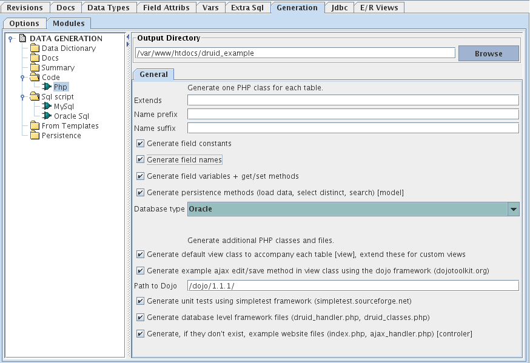
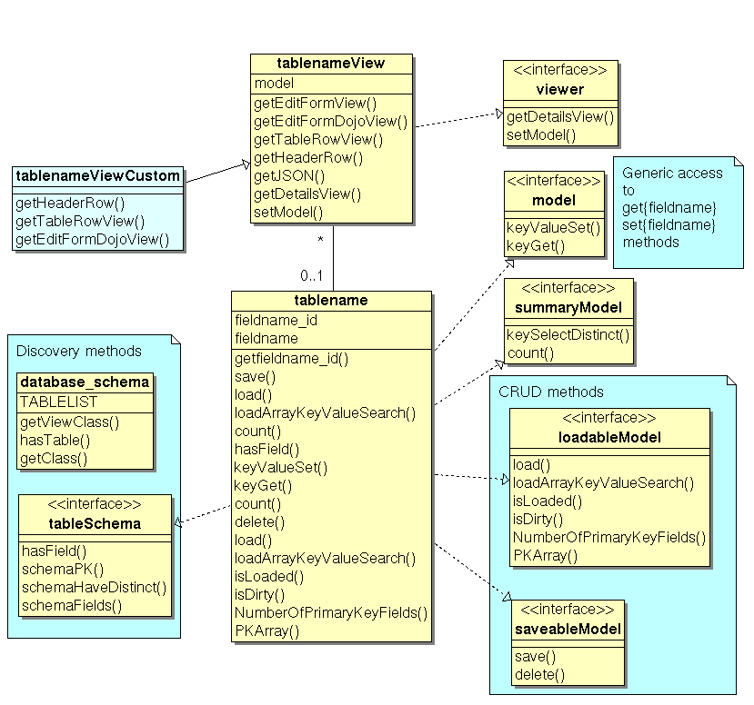
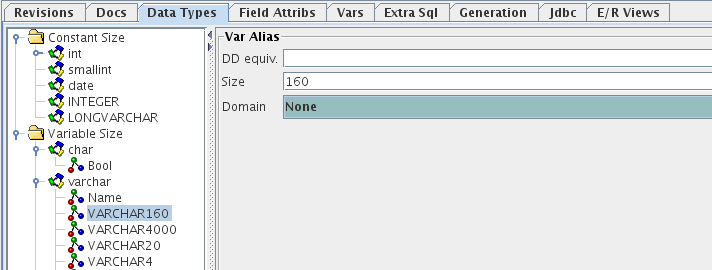

Druid can generate code for PHP, one class for each entity (table) defined in a druid database model. The classes are PHP 5 objects, and require PHP 5.
Generated PHP objects can range in complexity from simple descriptions of a table structure to persistent objects with CRUD capabilities, associated unit tests, and extensible view classes, along with files to produce the framework for a database driven website.
Scaling: Generated code is intended to scale up to tens of tables and tens of thousands of records. It has inherent performance limitations, particularly with the selectDistinct and loadArray methods. Data types: Not all datatypes may be supported and not all datatypes will have correctly set limits on field lengths, unrecongized datatypes are treated as long text strings. Datatype support is most complete for MySQL.
Security: druid_handler.php allows any value from any field in any record for which there is a generated {tablename} class to be returned and edited. 'ajax_handler.php?druid_action=returndistinctjson&table=SENSITIVE_TABLE&field=SENSITIVE_FIELD' will return all unique values in SENSITIVE_FIELD. You must wrap druid_handler.php with code that authenticates users, and provides a database connection with appropriately restricted rights. You should not use Druid to build and maintain tables that contain a set of sensitive and public data (e.g. trying to hide a Sensitive class by deleting mention of it from druid_classes.php as a security measure will fail if php code is regenerated and druid_classes.php is overwritten from a druid model that contains the Sensitive entity.
Note: No PHP files generated by druid create a database connection. You will need to create a database connection and have it in scope when calling any of the generated methods that query the database. For some drivers and settings, this can work by setting the default database connection parameters in php.ini, but in most cases, you will need to create an appropriate connection to the underlying database (e.g. $connection = mysql_connect('localhost','username','password'); mysql_select_db('{databasename}')). The name of the variable used to hold the connection handle does not matter, unless you are connecting to an oracle database through OCI8, in which case the generated php code requires it to be named $conn and to be found in $GLOBALS['conn'].
Table Structure: Generated code expects each table to have a surrogate numeric primary key automatically incremented by a sequence (int not null primary key auto_increment in MySQL). Partial support is available for non-numeric and multiple field primary keys, but it is not complete and has not been tested.
Complexity of the generated code is controlled by selecting options on the Generation/Code/PHP tab.
Contains include statements to load each generated {tablename}.php file (your code only needs to include_once('druid_classes.php') to include all generated classes for a database.
Declares class database_schema, which lets you pass a tablename as a string and load an appropriate model and view classes for that table.
Ajax handler for generated classes. Does not make a database connection, so you will need to wrap this in your own ajax_handler.php
Declares interfaces used in {tablename} and {tablename}View classes.
Loaded by include_once('druid_interfaces.php) from within each {tablename}.php file. You only need to include druid_classes.php in your own code.

interface model {
public function keyValueSet($fieldname,$value); // set the value of a field to specified value for the current instance of model.
public function keyGet($fieldname); // gets the value of the specified field in the current instance of model.
}
interface loadableModel {
public function load($pk); // load data for the record specified by the primary key value $pk into the current instance of model.
public function isLoaded(); // returns true if model instance contains data loaded from record in table.
public function isDirty(); // returns true if model data has changed since instantiation or load.
public function loadArrayKeyValueSearch($searchTermArray); // returns an array of models matching the fieldname=value criteria in the searchTermArray
public function NumberOfPrimaryKeyFields(); // returns the number of fields in the primary key of this table
public function PKArray(); // return primary key(s) for current record as fieldname=>value array
}
interface saveableModel {
public function save(); // save changes to current record or add new record to underlying database.
public function delete(); // delete current record from underlying database.
}
interface summaryModel {
public function count(); // returns total number of records in table
public function keySelectDistinct($fieldname,$startline,$link,$endline,$includecount=false,$orderbycount=false); //
// return distinct values for $fieldname, if it has an index (if it is in schemaHaveDistinct()).
// generic wrapper for selectDistinct{fieldname}() methods.
}
interface tableSchema {
public function hasField($fieldname); // returns true if the model includes a field with a name exactly matching $fieldname.
public function schemaPK(); // returns array of primary key field names
public function schemaHaveDistinct(); // returns array of field names for which selectDistinct{fieldname} methods are available.
public function schemaFields(); // returns array of all field names
}
interface viewer {
public function setModel($aModel); // specify which instance of model provides the data to be shown in this view.
public function getDetailsView($includeRelated=true); // display the fields and values of the instance of the model (as a html list in default implementation).
}
Simpletest (simpletest.sourceforge.net) unit testing harness. Visit all_tests.php in a web deployment or run php all_tests.php to run unit tests.
Simpletest unit tests for generated classes
Model class for table. Has private variable for each field in the table, along with get and set methods for each field.
If a table has a single field primary key, that primary key is assumed to have its value automatically assigned by the database as in a surrogate numeric primary key (i.e. serial, auto_increment, with a sequence). If a table has a single field primary key, the save function will add a new record if the primary key for the instance is null, expecting the value for that primary key to be assigned by the database. If the table has a multiple field primary key, then save() will require the values for each field in the primary key to be set in the instance in order to either save or insert, and will only insert a new record if invoked as save(true).
The field size of variable size data types is taken from the Size value for that data type in Druid (Data Type tab, Variable Size, "Size" on Var Alias Tab). If Size is for a decimal number with total length and number of decimal places (e.g. Size = 10,2) then the variable size in PHP is taken as the number before the comma (e.g. 10).
Currently recognized Constant Size field types (Data Type tab, Constant Size, Constant Basic Type tab in Druid) and the sizes they are assigned are listed below. These names are case insensitive. BIT, bit, and Bit are all given a size of 1. If a Constant Size data type isn't on this list, a default value of 20 will be used for its size.
Extensible View class for table. Contains example that can be used to display a record or an ajaxian editing form for an instance of the model class.
Simpletest unit tests for the constructor, set methods (including raising exceptions for wrong type or overlength values) and primary key values. Generated methods with unit tests are marked [unit test] above.
class_lib.php contains a User class. The User class assumes a User table in a database with the structure below.
CREATE TABLE User
(
user_id int primary key not null auto_increment,
email varchar(255) unique not null,
password varchar(80),
active int default 1,
full_name varchar(80),
about text,
date_created timestamp,
date_last_updated datetime,
date_last_login datetime,
failures_since_last_login int default 0,
session_secret varchar(255)
)
TYPE = InnoDB;
CREATE INDEX Useridx1 ON User(email,password,active);
CREATE TABLE User
(
user_id int not null,
email varchar(255) unique not null,
password varchar(80),
active int default 1,
full_name varchar(80),
about text,
date_created date,
date_last_updated date,
date_last_login date,
failures_since_last_login int default 0,
session_secret varchar(255),
primary key(user_id)
);
CREATE INDEX Useridx1 ON User(email,password,active);
<html>
<head>
</head>
<body>
<H1>Example use of PHP code generated from Druid.</H1>
<?php
// This is an example illustrating a few of the ways in which you can use PHP classes
// generated by Druid to produce a database driven website.
include_once('druid_classes.php');
// *******
// ******* You must provide connections.php or a replacement means of
// ******* having a database connection in scope before calling methods on generated php tables.
// ******* You must also do this in the file ajax_handler.php
// *******
// ******* Warning: You must limit the rights of the user in the database for this
// ******* connection with appropriate (e.g. select only on this schema only from this host only) privileges.
// *******
@include_once('connections.php'); // contains declaration of make_my_database_connection()
@$connection = make_my_database_connection();
if (!$connection) { echo 'Error: No database connection.'; }
$display = substr(preg_replace('/[^a-z]/','',$_GET['display']),0,20);
switch ($display) {
case 'search':
// You must sanitize any data that could be provided by a user.
// The paterns below may not include all valid characters for your data
// And the length limits below may be too short for your data
$table_name = substr(preg_replace('/[^a-zA-Z_]/','',$_GET['table']),0,20);
$field_name = substr(preg_replace('/[^a-zA-Z_0-9]/','',$_GET['field']),0,20);
$value = substr(preg_replace('/[^a-zA-Z_\ 0-9]/','',$_GET[$field_name]),0,255);
echo "<h2>Search for [$table_name].[$field_name]=[$value]</h2>";
$db = new database_schema(); // database_schema has discovery methods allowing you load a class representing a table when given a string
if ($db->hasTable($table_name)) { ;
// two thirds of a model-view-controler are generated from the database by Druid in PHP
$table_class = $db->getClass($table_name); // table_class is a model class for the table_name table.
$table_view = $db->getViewClass($table_name); // table_view is a view class for the table_name table.
// You need to supply your own controler, or procedural code (like this file) to control these classes.
if ($table_class->hasField($field_name)) {
// loadArrayKeyValueSearch() takes an array of fieldnames and search values as a parameter.
$searchTermArray = array($field_name => $value);
// loadArrayKeyValueSearch() queries the database and returns an array of model objects representing rows in the target table.
$results = $table_class->loadArrayKeyValueSearch($searchTermArray);
if (count($results)==0) { echo 'No matching values'; }
foreach($results as $row) {
$table_view->setModel($row); // Tell the view which row to display.
echo $table_view->getDetailsView(); // Tell the view how to display the row.
// Extend the {tablename}View classes to customize how records are displayed.
}
}
}
break;
case 'table':
$table_name = substr(preg_replace('/[^a-zA-Z_]/','',$_GET['table']),0,20); // May not include all valid table name characters.
$db = new database_schema();
if ($db->hasTable($table_name)) { ;
echo '<h2>Distinct values in '.$table_name.'</h2>';
$table_class = $db->getClass($table_name);
// Each field in the table with an index has a selectDistinct method that runs a
// select count(*), fieldname from tablename group by fieldname query.
// These are directly accesible with selectDistinct{fieldname} methods,
// and as shown here, with a generic keySelectDistinct($fieldname...) method.
$fieldarray = $table_class->schemaHaveDistinct(); // schemaHaveDistinct is a discovery method to find fields with selectDistinct methods.
if ($fieldarray=='') {
echo 'No values available.';
} else {
foreach($fieldarray as $key => $field) {
echo '<h3>Distinct values for '.$field.'</h3>';
$beginwith = '';
$link = 'index.php?display=search&table='.$table_name.'&field='.$field; // &{fieldname}={value} is appended by keySelectDistinct.
$endwith = '<BR>';
$includecount = true;
$orderbycsount = false;
echo $table_class->keySelectDistinct($field,$beginwith,$link,$endwith,$includecount,$orderbycount);
}
}
}
}
?>
</body>
</html>